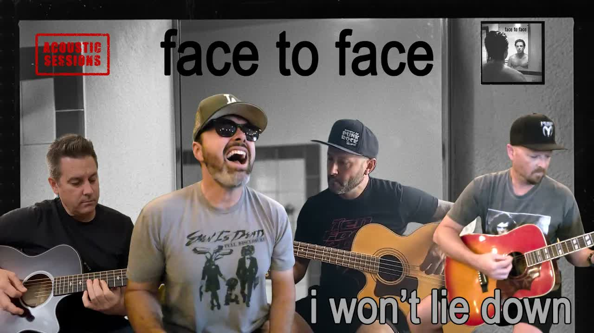

Review
BROKESINGERCRIS & FRIENDS - I Won't Lie Down
BROKESINGERCRIS & FRIENDS - I Won't Lie Down

Ich hasse sowas.
Nicht den Song.
Nicht Chris.
Nicht Face To Face.
Sondern diesen Moment, in dem man gemütlich denkt:
„Ach komm, hörste mal eben rein.“
Und drei Minuten später sitzt man da wie ein emotional angeknackster Vollidiot und weiß nicht, ob man grinsen, fluchen oder kurz sehr konzentriert aus dem Fenster schauen soll.
Verdammte Wixxe.
Chris von BrokeSingerCris hat mir erst am 08.07.2026 völlig freiwillig ein paar Fragen für RandaleFUNK beantwortet.
Jetzt kommt er mit einer Nummer um die Ecke, die ausnahmsweise nicht nach Vollgas klingt.
Ein akustisches Cover von „I Won't Lie Down“ von Face To Face.
Mit dabei:
Chris am Gesang. Im Videotitel hängt sein Name im Umfeld von Triple Bordego.
Andy an der akustischen Gitarre. Ebenfalls Teil dieser kleinen Pulley-, Fine-Dining-, Triple-Bordego- und Double-Negative-Kiste.
Loïc Cormery am Bass. In den Credits ausdrücklich genannt.
Und Mike Harder von Pulley an der akustischen Leadgitarre. Ja. Pulley. Der Mike Harder. Gitarre. Genau der Punkt, an dem alte Skatepunk-Knie kurz knacken.
Pulley.
Face To Face.
Akustisch.
Ja, genau.
Irgendwo in Kalifornien hat gerade ein Skatepunk aus den Neunzigern seine Cargo-Shorts verloren.
Das Original stammt vom selbstbetitelten Face-To-Face-Album von 1996. Also aus einer Zeit, in der Songs noch klangen, als würde jemand gleichzeitig vor sich selbst weglaufen und dabei sehr dringend eine Meinung haben.
Fast dreißig Jahre alt.
Danke für nichts, Kalender.
Das Original schiebt.
Das Original drückt.
Das Original hat diesen blechernen Vorwärtsdrang, der einem sagt:
Hinfallen ist okay, aber liegenbleiben ist Verrat.
Und dann kommen Chris und diese Bande auf die Idee, das Ding runterzufahren.
Nicht halb.
Nicht so ein bisschen „Unplugged-Version für den Algorithmus“.
Sondern richtig.
Akustikgitarre.
Bass.
Stimme.
Luft dazwischen.
Keine verzerrten Gitarren, hinter denen sich irgendwas verstecken kann.
Kein Schlagzeug, das einem die Gedanken aus dem Schädel prügelt.
Keine Wand aus Lärm.
Nur diese Melodie.
Diese Worte.
Und Chris' Stimme.
Dass der Typ singen kann, wusste ich.
Aber bisher hatte ich ihn eher in der Ecke Punkrock, Melodic Hardcore und „mach lauter, sonst merkt noch jemand, dass wir Gefühle haben“ abgespeichert.
Hier trägt seine Stimme den Song komplett anders.
Rau genug, damit es nicht nach Lagerfeuer-Kitsch riecht.
Klar genug, damit man jedes verdammte Wort abbekommt.
Plötzlich haut eine Zeile wie
„Does anybody hear him? He's screaming at the same blank wall.“
nicht mehr einfach nur als Text vorbei.
Die bleibt stehen.
Die guckt dich an.
Und fragt ziemlich unfreundlich, wie oft man selbst eigentlich schon gegen dieselbe leere Wand gebrüllt hat.
Danke auch.
Richtig gemein wird es dann bei:
„I'm not afraid of the price I pay. I won't lie down as you walk away.“
Im Original ist das eine Ansage.
Hier klingt es eher wie ein Schwur, den jemand schon viel zu oft wiederholen musste.
Nicht pathetisch.
Nicht heldenhaft.
Nicht Hollywood.
Eher wie:
Ich bin müde.
Ich bin angekratzt.
Ich habe keinen Bock mehr auf diese Scheiße.
Aber ich bleibe stehen.
Und genau da hat mich das Ding erwischt.
Grinsen.
Gänsehaut.
Kurz gefährlich nah an „Alter, reiß dich zusammen“.
Dann direkt noch einmal gehört.
Und dann noch einmal.
So läuft das also jetzt.
Manchmal braucht ein guter Song keine lauteren Gitarren.
Manchmal braucht er jemanden, der mutig genug ist, ihm den Schutzpanzer abzureißen und zu schauen, ob darunter noch etwas schlägt.
Bei „I Won't Lie Down“ schlägt da noch sehr viel.
Und Chris drückt genau an die Stelle.
Natürlich kann man jetzt rummosern.
Akustik-Cover.
Alte Nummer.
Punkrock wird weich.
Alle werden älter.
Bald sitzen wir in Strickjacken im Backstage und diskutieren über rückenschonende Bühnenmatten.
Bitte sehr.
Ich höre mir währenddessen lieber an, wie aus einem alten Face-To-Face-Brett plötzlich etwas wird, das nicht nach Nostalgie riecht, sondern nach offener Rechnung.
Das Cover tritt nicht gegen das Original an.
Es nimmt denselben Song, dreht ihn um, wischt den Dreck nicht weg und zeigt einem plötzlich eine andere Wunde.
Und jetzt sitze ich hier.
Emotional erwischt von einem akustischen Face-To-Face-Cover.
Danke, Chris.
Wirklich.
Ganz toll gemacht.
Arschloch.
I hate this kind of thing.
Not the song.
Not Chris.
Not Face To Face.
I mean that moment when you casually think:
"Yeah, sure, I'll just give it a quick listen."
And three minutes later you are sitting there like an emotionally dented idiot, not sure whether to grin, swear, or stare very hard out the window for a second.
Goddamn it.
Chris from BrokeSingerCris had just answered a few questions for RandaleFUNK on July 8, 2026.
Now he shows up with a song that, for once, does not sound like full throttle.
An acoustic cover of "I Won't Lie Down" by Face To Face.
On board:
Chris on vocals. The video title places him in the same little orbit as Triple Bordego.
Andy on acoustic guitar. Also part of this Pulley, Fine Dining, Triple Bordego and Double Negative situation.
Loïc Cormery on bass. Explicitly named in the credits.
And Mike Harder from Pulley on acoustic lead guitar. Yes. Pulley. Mike Harder. Guitar. The exact spot where old skate-punk knees start making noises.
Pulley.
Face To Face.
Acoustic.
Yeah, exactly.
Somewhere in California, a '90s skate-punk kid just lost his cargo shorts.
The original comes from the self-titled Face To Face album from 1996. From a time when songs still sounded like someone running away from themselves while urgently needing to make a point.
Almost thirty years old.
Thanks for nothing, calendar.
The original pushes.
The original presses forward.
It has that tinny forward drive that tells you:
Falling down is fine. Staying down is betrayal.
And then Chris and this whole crew decide to strip the thing down.
Not halfway.
Not some tiny "unplugged version for the algorithm."
Properly.
Acoustic guitar.
Bass.
Voice.
Space between the notes.
No distorted guitars to hide behind.
No drums beating your thoughts out of your skull.
No wall of noise.
Just the melody.
The words.
And Chris' voice.
I already knew the guy could sing.
But until now I had filed him somewhere between punk rock, melodic hardcore and "turn it up before someone notices we have feelings."
Here, his voice carries the song in a completely different way.
Rough enough to avoid campfire cheese.
Clear enough that every damn word lands.
Suddenly a line like
"Does anybody hear him? He's screaming at the same blank wall."
does not just pass by as lyrics.
It stays there.
It looks at you.
And it very rudely asks how many times you have screamed at the same blank wall yourself.
Thanks for that.
Then it gets properly mean with:
"I'm not afraid of the price I pay. I won't lie down as you walk away."
In the original, that line is a statement.
Here, it sounds more like an oath someone has had to repeat way too many times.
Not pathetic.
Not heroic.
Not Hollywood.
More like:
I am tired.
I am scratched up.
I am done with this crap.
But I am still standing.
That is where the thing got me.
Grinning.
Goosebumps.
Dangerously close to "pull yourself together, idiot."
Then I played it again.
And then again.
So this is my life now.
Sometimes a good song does not need louder guitars.
Sometimes it needs someone brave enough to rip off the armor and check whether something is still beating underneath.
With "I Won't Lie Down", there is a lot still beating.
And Chris presses right on that spot.
Sure, you can complain.
Acoustic cover.
Old song.
Punk rock getting soft.
Everybody getting older.
Soon we will all be backstage in cardigans discussing stage mats that are easier on the lower back.
Be my guest.
Meanwhile, I would rather listen to an old Face To Face banger turn into something that does not smell like nostalgia, but like unfinished business.
This cover is not trying to fight the original.
It takes the same song, turns it around, leaves the dirt where it is and suddenly shows you a different wound.
And now here I am.
Emotionally ambushed by an acoustic Face To Face cover.
Thanks, Chris.
Really.
Great job.
Asshole.
Listen to the cover on YouTube Listen to the Face To Face original